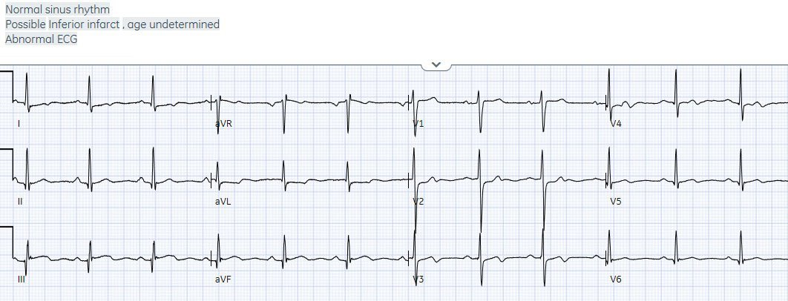
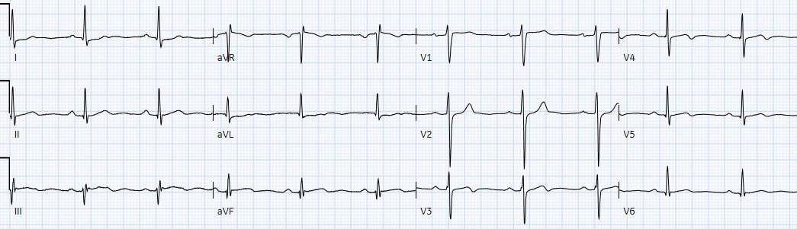
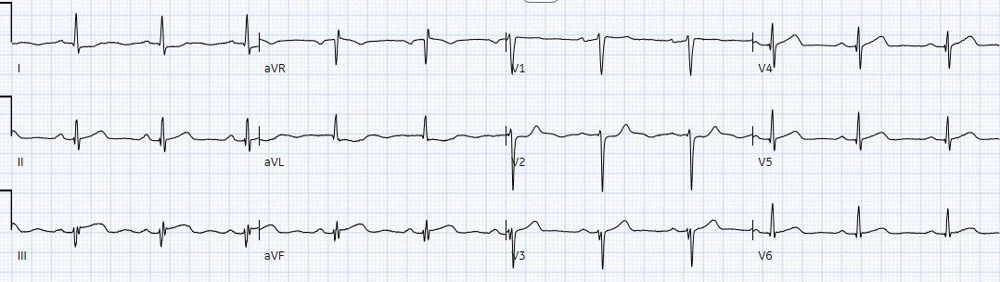
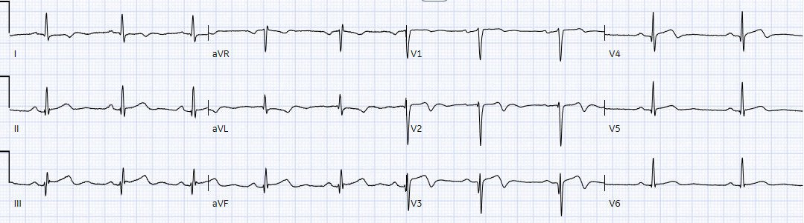
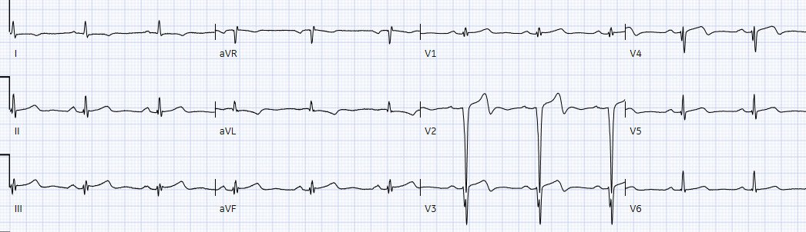
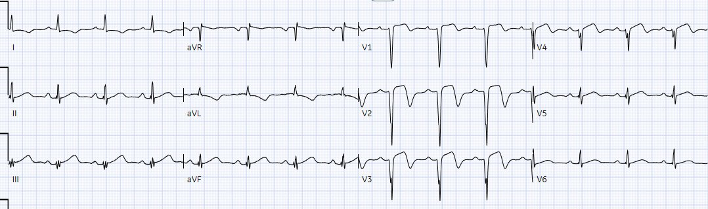
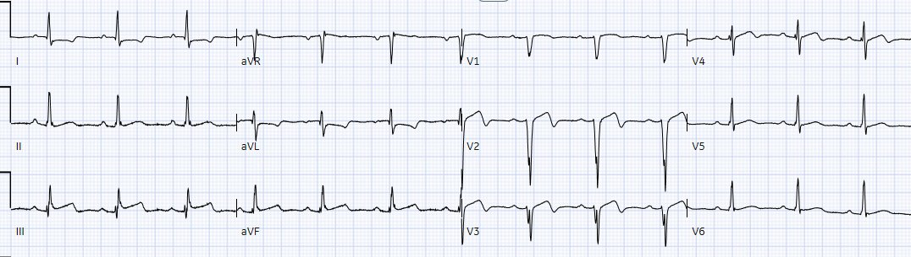
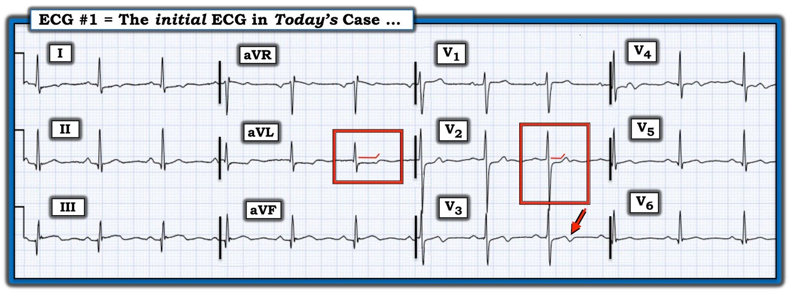

02/02/2023 — OMI “đấu tay đôi”: bệnh nhân 30 tuổi đau ngực này có dấu hiệu tắc mạch hay tái tưới máu nào không?
Bản dịch tiếng Việt của bài "Dueling OMI: does this 30 year old with chest pain have any signs of occlusion or reperfusion?" – Dr. Smith’s ECG Blog. Giữ nguyên toàn bộ 9 hình ảnh của bản gốc.
Tác giả: Jesse McLaren, có chỉnh sửa của Smith
Một bệnh nhân 30 tuổi có tiền sử đái tháo đường đến viện vì đau ngực từng cơn kèm vã mồ hôi trong hai
ngày, tái phát hai
giờ trước khi đến viện. Dưới đây là điện tâm đồ #1 lúc phân loại (triage). Có dấu hiệu nào của
tắc mạch hay tái tưới máu không?


Nhịp xoang bình thường, dẫn truyền bình thường, trục bình thường,
tăng tiến sóng R bình thường và điện thế bình thường. Có ST chênh lên nhẹ ở thành dưới
tại III, không đạt tiêu chuẩn STEMI, nhưng đi kèm với ST
chênh xuống ở aVL và V2, điều này khiến nó có giá trị chẩn đoán nhồi máu cơ tim do tắc (Occlusion
MI) thành dưới-sau (do RCA hoặc động mạch mũ) – kèm theo sóng Q thành dưới không rõ
tuổi. Cũng có sóng T hai pha kín đáo ở V3-4 với ý nghĩa chưa rõ (hình ảnh này có thể gặp trong tái tưới máu thành trước hoặc thất phải, nhưng thường không đi kèm tắc mạch thành dưới-sau).
Để bạn biết rằng cách đọc điện tâm đồ này không phải nhờ “kính nhìn hồi cứu” (retrospectoscope):
Tôi gửi nó cho Dr. Smith mà không kèm bất kỳ thông tin nào, và ông trả lời ngay lập tức: “OMI dưới-sau-bên”
Điện tâm đồ có kết quả đọc bằng máy tính và kết luận cuối cùng của bác sĩ tim mạch
là “có thể nhồi máu thành dưới, chưa xác định được tuổi”, vì có sóng Q. Nó được
bác sĩ cấp cứu ký duyệt là “STEMI âm tính” vì không
đạt tiêu chuẩn STEMI. Vì vậy bệnh nhân phải chờ được khám. Troponin I đầu tiên
trả về 150 ng/L (<26 ở nam và <16 ở nữ) và điện tâm đồ #2 được
ghi, khi bệnh nhân đã hết đau. Bạn nghĩ gì?


Giờ đây ST chênh lên ở III cùng thay đổi soi gương ở aVL đang
giảm dần, và V2 cho thấy đoạn ST trở về bình thường và sóng T lớn hơn một chút
– như vậy đã có tái tưới máu thành dưới-sau. Và sóng T hai pha ở V3-4
vẫn tồn tại.
Bệnh nhân được bác sĩ cấp cứu khám 5 giờ sau khi
đến viện, không còn triệu chứng, troponin lặp lại giảm xuống 125 ng/L và điện tâm đồ #3. Bạn
nghĩ gì?


Đoạn ST lại chênh lên ở III và có sóng T thành dưới đầy đặn hơn,
kèm ST chênh xuống soi gương ở aVL và ST chênh xuống ở V2.
Nhưng giờ còn có mất sóng R thành trước với sóng Q mới, và
sóng T trước đây hai pha ở V3-4 nay đã dương (giả bình thường hóa). Hơn nữa, sóng T ở V3 và V4 nay đầy đặn, gợi ý chúng là sóng T tối cấp. Vì vậy, mặc dù
troponin ban đầu giảm và triệu chứng đã hết, điện tâm đồ cho thấy tắc lại với OMI
ảnh hưởng thành dưới-sau cùng thành trước. Nhưng nó vẫn không đạt tiêu chuẩn
STEMI, nên bệnh nhân được chuyển tới khoa tim mạch với chẩn đoán ACS.
10 giờ sau khi đến viện, bệnh nhân được khoa
tim mạch đánh giá và ghi điện tâm đồ #4:


ST chênh lên và ST chênh xuống soi gương ở aVL đã
cải thiện và sóng T không còn tối cấp. Sóng T dương thoáng qua
ở V3-4 lại đảo ngược, và giờ có sóng T đảo ngược khắp
thành trước bên. Giờ đây hình ảnh chủ đạo là tái tưới máu thành trước bên, nhiều khả năng do LAD đoạn gần
13 giờ sau khi đến viện, bệnh nhân than đau ngực và
điện tâm đồ #5 được ghi, troponin lặp lại là 11,000 ng/L.


Sóng R vùng trước tim mất thêm (thực tế là sóng Q sâu), với đoạn
ST ở V2 tăng lên nhưng vẫn còn sóng T đảo ngược do tái tưới máu ở thành trước bên. Triệu chứng tái
phát gợi ý tắc lại, với điện tâm đồ nằm giữa tái tưới máu và tắc lại.
Đau ngực kháng trị với nitroglycerin nên phòng thông tim (cath lab) được kích hoạt: tắc 100% LAD đoạn
gần và tắc 99% động mạch mũ đoạn giữa.
Troponin đỉnh là 15,000 ng/L, và siêu âm tim thấy EF bảo tồn nhưng
mỏm tim vô động và giảm động thành trước và thành dưới. Điện tâm đồ #6 ngày hôm sau:


Diễn tiến của tái tưới máu LAD với sóng T đảo ngược sâu hơn ở thành trước và aVL (kèm sóng T cao hơn do soi gương)
Điện tâm đồ #7 lúc ra viện vài ngày sau đó:


Vẫn còn
sóng T đảo ngược do tái tưới máu ở thành trước bên, với sóng R hồi phục ở V4-5 nhưng
không hồi phục ở V2-3.
OMI kép, và OMI“đấu tay đôi”
STEMI thường được quy cho một động mạch liên quan đến nhồi máu
bị tắc hoàn toàn và không hồi phục, gây ST chênh lên khu trú
vượt quá tiêu chuẩn STEMI. Nhưng khuôn khổ này đã được chứng minh là
không đáng tin cậy, và bệnh học nền của nhồi máu cơ tim do tắc phức tạp
và động hơn nhiều: có thể ST chênh lên ít hoặc không có nhưng có nhiều
dấu hiệu OMI khác, và trạng thái động này có thể dao động giữa tái tưới máu tự phát
và tắc lại tự phát.
Ngoài ra, còn có một số tình huống khác
làm phức tạp OMI và việc đọc điện tâm đồ:
·
tắc một động mạch liên quan đến nhồi máu có thể
ảnh hưởng đến các vùng khác tùy vị trí tắc. Ví dụ, ST chênh lên thành trước và
thành dưới có thể do tắc RCA
đoạn gần hoặc tắc LAD
đoạn xa/“vòng qua mỏm” (wraparound)
·
tắc một động mạch liên quan đến nhồi máu có thể
làm tắc tuần hoàn bàng hệ đang nuôi một vùng khác có tắc hoàn toàn
mạn tính
·
tắc một động mạch liên quan đến nhồi máu có thể
gây thiếu máu cục bộ dưới nội tâm mạc ở một động mạch khác vốn đã hẹp khít. Ví
dụ, OMI thành dưới kèm hẹp khít đồng thời tạo ra một hình ảnh
kết hợp (hình ảnh
Aslanger) với STE thành dưới và thiếu máu cục bộ dưới nội tâm mạc
·
tắc đồng thời hai động mạch liên quan đến nhồi máu (“đồng thủ phạm” – co-culprits)
Trong ca này có hai động mạch liên quan đến nhồi máu. Điều này
làm phức tạp việc đọc điện tâm đồ vì 1) có hai hình ảnh
tắc mạch khác nhau, 2) không hình ảnh nào từng đạt tiêu chuẩn STEMI, 3) chúng
tái tưới máu/tắc lại vào những thời điểm khác nhau, và 4) có tác động khác nhau lên
một số chuyển đạo chung. Ví dụ, aVL là chuyển đạo bên cao,
soi gương với thành dưới: OMI thành dưới có thể gây ST chênh lên/sóng T tối cấp ở thành dưới kèm ST chênh xuống soi gương ở aVL (điện tâm đồ #1/3), trong khi tái tưới máu thành bên có thể gây sóng T đảo ngược nguyên phát ở aVL (điện tâm đồ #4-7) kèm sóng T thành dưới cao do soi gương. Tương tự, chuyển đạo trước V2 soi gương với
thành sau: OMI thành sau có thể gây ST chênh xuống soi gương ở V2, trong khi tái tưới máu thành trước có thể gây sóng T đảo ngược nguyên phát ở V2.
Nói cách khác, không chỉ có OMI kép, mà chúng còn
“đấu tay đôi” – mỗi bên qua lại giữa tắc mạch và tái tưới máu, với
các hình ảnh điện tâm đồ xung đột nhau, lúc thì nghiêng về bên này, lúc lại nghiêng về
bên kia:
·
Điện tâm đồ #1: OMI động mạch mũ chiếm ưu thế, kèm tái tưới máu
LAD kín đáo
·
Điện tâm đồ #2: tái tưới máu động mạch mũ, LAD vẫn
đang được tái tưới máu
·
Điện tâm đồ #3: tắc lại động mạch mũ và LAD
·
Điện tâm đồ #4-7: tái tưới máu LCX và LAD, trong đó
LAD chiếm ưu thế
Điều cần nhớ
1.
Người trẻ có thể bị tắc mạch vành cấp.
2. Triệu chứng không phải lúc nào cũng tương quan với
tắc/tái tưới máu động mạch vành: triệu chứng đã hết nhưng dấu hiệu tắc mạch trên điện tâm đồ vẫn còn
thì cần tái tưới máu.
3.
Tiêu chuẩn STEMI không đáng tin cậy và dẫn tới
chậm trễ tái tưới máu: không chỗ tắc nào trong hai chỗ này từng đạt tiêu chuẩn STEMI, nhưng
có nhiều dấu hiệu chẩn đoán tắc mạch khác trên toàn bộ phức bộ QRS-T
– bao gồm mất sóng R và sóng Q mới, ST chênh lên kín đáo,
ST chênh xuống soi gương, giả bình thường hóa và sóng T tối cấp.
4.
Tiêu chuẩn STEMI cũng bỏ qua tái tưới máu
tự phát có nguy cơ tắc lại. Câu hỏi không phải là điện tâm đồ có đạt
tiêu chuẩn STEMI hay không, mà là bệnh nhân có OMI hay không, kể cả OMI đã tái tưới máu có
nguy cơ tắc lại.
5.
Troponin là chỉ dấu muộn của thiếu máu cục bộ,
không đáng tin cậy ở giai đoạn sớm của tắc mạch, hoặc khi tái tưới máu tự phát có nguy cơ tắc lại: ở đây troponin đầu tiên chỉ 150 và giảm ở
lần lặp lại, rồi lại tăng lên đỉnh 15,000.
6.
Chụp mạch vành có thể làm nổi bật chỗ tắc tại
thời điểm thủ thuật, nhưng chính các điện tâm đồ liên tiếp mới kể câu chuyện về tắc mạch
và tái tưới máu.
7.
Thay đổi điện tâm đồ của OMI có thể bị phức tạp hóa bởi vị trí
tắc, tổn hại tuần hoàn bàng hệ tới vùng tắc hoàn toàn mạn tính, hẹp khít
đồng thời, hoặc đồng thủ phạm – tạo nên các hình ảnh điện tâm đồ kết hợp với
thay đổi động tùy theo tình trạng tái tưới máu/tắc lại bên dưới.

==================================
BÌNH LUẬN CỦA TÔI, bởi KEN GRAUER, MD (1/2/2023):
==================================
Một bài viết quan trọng của Dr. McLaren, nhấn mạnh những vấn đề hiện nay của “mô hình STEMI” đã lỗi thời. Một cách xuất sắc — Dr. McLaren lần theo diễn tiến của các dấu hiệu điện tâm đồ qua 7 bản ghi liên tiếp trong ca hôm nay. Đã có những sai sót.
- Các sai sót trong ca hôm nay dẫn tới chậm trễ 13 giờ. Mãi đến khi điện tâm đồ thứ 5 được ghi (có vẻ chỉ vì đau ngực của bệnh nhân tái phát) — thì troponin lúc này đã tăng rõ rệt và thay đổi điện tâm đồ lúc này đã rõ ràng mới cuối cùng thuyết phục được các bác sĩ về sự cần thiết phải thông tim.
- Không may, tổn thương tim đáng kể đã xảy ra. Điều này có thể đã được giảm thiểu nếu các bất thường được phát hiện sớm hơn.
Ngay cả với những người vẫn còn “mắc kẹt” trong mô hình STEMI cũ — chú ý tới những “Điều cần nhớ” mà Dr. McLaren liệt kê sẽ giúp tránh những thiếu sót như trong ca hôm nay. Tôi tập trung bình luận vào việc áp dụng những Điều cần nhớ này ngay tại thời điểm có điện tâm đồ ban đầu có thể đã thúc đẩy con đường đến thông tim nhanh hơn nhiều như thế nào.
- Diễn tiến ngắt quãng (stuttering) của đau ngực trong ca hôm nay (tức là, từng cơn trong 2 ngày — rồi tái phát ~2 giờ trước khi đến khoa cấp cứu) — có liên quan đến việc xử trí tối ưu bệnh nhân hôm nay.
- Ngay cả những bác sĩ vẫn còn “mắc kẹt” với mô hình STEMI cũng cần chấp nhận rằng tắc mạch vành cấp thường là một quá trình động, đang tiến triển, chứ không phải một biến cố “tĩnh” duy nhất. Động mạch “thủ phạm” tắc cấp — nhưng sau đó đôi khi tự thông trở lại — và, thỉnh thoảng còn tiếp tục tự thông rồi tự tắc lại nhiều lần trong một khoảng thời gian, cho đến khi cuối cùng đạt tới một trạng thái cố định. Diễn tiến đau ngực ngắt quãng trong ca hôm nay lẽ ra đã phải gợi ý diễn tiến động này — đặc biệt là sau khi xem điện tâm đồ ban đầu!
Để rõ ràng, trong Hình 1 — tôi đã chép lại điện tâm đồ ban đầu của ca hôm nay. Bản ghi cho thấy nhịp xoang — các khoảng và trục bình thường — và không có lớn các buồng tim. Có các sóng q nhỏ và hẹp với ý nghĩa chưa chắc chắn ở nhiều chuyển đạo. (Lưu ý rằng thay vì sóng Q — có một phức bộ rSR’ ở chuyển đạo III).
- Thực ra có sóng ST-T bất thường ở 10/12 chuyển đạo trong điện tâm đồ #1. Mặc dù bác sĩ khoa cấp cứu đã đúng khi nói rằng điện tâm đồ ban đầu này “không đạt tiêu chuẩn STEMI” — tôi cho rằng có những thay đổi ST-T ở 3 chuyển đạo không thể bỏ qua.
Ở các chuyển đạo chi:
- Ban đầu tôi không tin rằng ST chênh lên kín đáo ở chuyển đạo III và aVF là có ý nghĩa — cho đến khi tôi thấy ST chênh xuống dạng phẳng (“dạng bậc thềm” – shelf-like) ở chuyển đạo aVL. Dù không nhất thiết là cấp tính — với bệnh sử đau ngực ngắt quãng trong 1-2 ngày qua, hình dạng ST-T ở chuyển đạo aVL phải được coi là thay đổi soi gương của nhồi máu được cho là mới xảy ra cho đến khi chứng minh được điều ngược lại.
- Trong bối cảnh của chuyển đạo aVL — chuyển đạo bên cao còn lại ( = chuyển đạo I) cho thấy ST chênh xuống dạng phẳng ở mức độ ít hơn nhưng-vẫn-có-ý-nghĩa.
Ở các chuyển đạo ngực:
- Không thể nào hình dạng phẳng (“dạng bậc thềm”) của ST chênh xuống ở chuyển đạo V2 lại là bình thường. Đặc biệt khi đi kèm với sóng R vốn đã cao bất ngờ ở chuyển đạo V2 — điều này (đúng như Dr. McLaren nói) có giá trị chẩn đoán OMI thành sau cho đến khi chứng minh được điều ngược lại. (Hãy nhớ rằng bình thường — ở chuyển đạo V2 thường có ST chênh lên nhẹ, dốc lên — và hầu như không bao giờ có ST chênh xuống).
- Ở một bệnh nhân đau ngực từng cơn — đoạn khởi đầu ST thẳng đuỗn ở chuyển đạo V3, kèm phần cuối sóng T đảo ngược (mũi tên ĐỎ) rõ ràng là đáng lo ngại. Hình dạng ST-T này không được dự đoán trong OMI thành sau — mà thay vào đó gợi ý khả năng hoặc hội chứng Wellens (nếu đau ngực đã hết) — hoặc — tái tưới máu sau tắc LAD mới xảy ra.
- Ủng hộ ý nghĩa của hình dạng ST-T bất thường ở chuyển đạo V3 — là phần cuối sóng T đảo ngược kín-đáo-nhưng-có-thật ở các chuyển đạo lân cận V4 và V5.
- Một dấu hiệu bất thường cuối cùng ở các chuyển đạo ngực — là sóng T dương ở chuyển đạo V1 cao hơn sóng T dương ở chuyển đạo V6. Dù đây là dấu hiệu không đặc hiệu — nó thường liên quan đến thiếu máu cục bộ.
ĐIỀU CỐT LÕI:
Bệnh sử trong ca hôm nay không thể bị bỏ qua. Dù bệnh nhân trẻ hơn so với độ tuổi chúng ta thường gặp nhồi máu cấp — bệnh đái tháo đường rõ ràng làm tăng nguy cơ.
- Dù tiêu chuẩn STEMI dựa trên milimét không đạt ở điện tâm đồ #1 — và dù thay đổi ST-T ở hầu hết các chuyển đạo trong điện tâm đồ ban đầu không có tính quyết định — hình dạng ST-T ở 3 chuyển đạo ( = các chuyển đạo aVL — V2 — V3) không thể bị bỏ qua như một dấu hiệu cho thấy một biến cố cấp có thể vừa xảy ra.
- Ít nhất — điện tâm đồ ban đầu lẽ ra phải được ghi lại trong vòng 10-20 phút. Thấy được dù chỉ là thay đổi ST-T kín đáo (chẳng hạn ST chênh xuống ít hơn ở chuyển đạo V2, kèm sóng T dương hơn ở chuyển đạo này — như cuối cùng đã thấy khi ghi điện tâm đồ thứ 2 trong ca hôm nay) — sẽ là bằng chứng của thay đổi động xác nhận tái tưới máu sau OMI thành sau mới xảy ra.
- Troponin lần 1 thực sự đã tăng (150 ng/L). Với bệnh sử đáng lo ngại và điện tâm đồ ban đầu — kết quả này lẽ ra đã đủ để thông tim kịp thời.
- Xin nhấn mạnh: — Từ điện tâm đồ ban đầu, tôi hoàn toàn không biết rằng có 2 động mạch “thủ phạm” trong ca hôm nay. Nếu biết điều này — nó sẽ giải thích được một số dấu hiệu điện tâm đồ tương phản kín đáo. Nhưng vấn đề là chúng ta không cần biết giải phẫu mới nhận ra được rằng ở một bệnh nhân đau ngực mới — hình dạng ST-T ở các chuyển đạo aVL, V2 và V3 của điện tâm đồ ban đầu không thể bị bỏ qua cho đến khi chúng ta đã chủ động loại trừ một biến cố cấp mới xảy ra (hoặc vẫn đang diễn ra).

